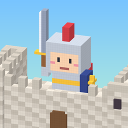

Tangle Defense탱글 디펜스タングル・ディフェンスTangle DefenseTangle DefenseTangle DefenseTangle DefenseTangle DefenseTangle Defense
A cozy idle castle defense: your hero fires on their own, and you choose how to grow stronger.
영웅이 알아서 싸우고, 나는 어떻게 강해질지만 고르는 귀여운 방치형 성 디펜스예요.
ヒーローが自動で戦い、あなたはどう強くなるかを選ぶだけ。かわいい放置系の城ディフェンスです。
英雄自动射箭，你只需决定如何变强。可爱的放置守城游戏。
英雄自動射箭，你只需決定如何變強。可愛的放置守城遊戲。
Una defensa de castillo idle y relajante: tu héroe dispara solo y tú decides cómo hacerte más fuerte.
Uma defesa de castelo idle e relaxante: seu herói atira sozinho e você decide como ficar mais forte.
Eine entspannte Idle-Burgverteidigung: Dein Held schießt von selbst, du entscheidest, wie du stärker wirst.
Une défense de château idle et relaxante : ton héros tire tout seul, toi, tu choisis comment devenir plus fort.
Questions, bugs or ideas? Email us.
질문, 버그, 의견은 이메일로 보내 주세요.
質問・不具合・ご意見はメールでどうぞ。
有问题、错误或建议？请发邮件给我们。
有問題、錯誤或建議？請寄信給我們。
¿Preguntas, errores o ideas? Escríbenos.
Dúvidas, bugs ou ideias? Mande um e-mail.
Fragen, Fehler oder Ideen? Schreib uns.
Une question, un bug, une idée ? Écris-nous.
SparrowLabs is a one-person studio. Every email is read and answered personally, usually within a few days.
참새연구소는 1인 스튜디오예요. 모든 메일을 직접 읽고 보통 며칠 안에 답장해 드려요.
SparrowLabs は一人で運営しているスタジオです。すべてのメールに目を通し、通常は数日以内にお返事します。
SparrowLabs 是一人工作室。每封邮件都会亲自阅读并回复，通常在几天之内。
SparrowLabs 是一人工作室。每封信都會親自閱讀並回覆，通常在幾天之內。
SparrowLabs es un estudio de una sola persona. Leo y respondo cada correo personalmente, normalmente en pocos días.
A SparrowLabs é um estúdio de uma pessoa só. Cada e-mail é lido e respondido pessoalmente, normalmente em poucos dias.
SparrowLabs ist ein Ein-Personen-Studio. Jede E-Mail wird persönlich gelesen und meist innerhalb weniger Tage beantwortet.
SparrowLabs est un studio d’une seule personne. Chaque e-mail est lu et reçoit une réponse personnelle, en général sous quelques jours.
rockman0320+tangledefense@gmail.comFor a bug, these help us find it faster:
버그를 알려 주실 때 아래 내용이 있으면 더 빨리 찾을 수 있어요.
不具合の場合、次の情報があると早く見つけられます。
报告错误时，附上以下信息能帮我们更快找到问题：
回報錯誤時，附上以下資訊能幫我們更快找到問題：
Si es un error, esto nos ayuda a encontrarlo antes:
Se for um bug, isto ajuda a encontrá-lo mais rápido:
Bei einem Fehler hilft uns Folgendes, ihn schneller zu finden:
Pour un bug, ces informations nous aident à le trouver plus vite :
- Your device model and OS version (e.g. iPhone 16, iOS 27)기기 모델과 OS 버전 (예: iPhone 16, iOS 27)端末の機種と OS のバージョン（例：iPhone 16、iOS 27）设备型号和系统版本（例如 iPhone 16、iOS 27）裝置型號和系統版本（例如 iPhone 16、iOS 27）El modelo de tu dispositivo y la versión del sistema (p. ej., iPhone 16, iOS 27)O modelo do aparelho e a versão do sistema (ex.: iPhone 16, iOS 27)Dein Gerätemodell und die Systemversion (z. B. iPhone 16, iOS 27)Le modèle de ton appareil et la version du système (ex. : iPhone 16, iOS 27)
- The world and wave, or the screen where it happened세계와 웨이브, 또는 문제가 생긴 화면ワールドとウェーブ、または問題が起きた画面所在的世界和波次，或出现问题的画面所在的世界和波次，或出現問題的畫面El mundo y la oleada, o la pantalla donde ocurrióO mundo e a onda, ou a tela onde aconteceuWelt und Welle oder der Bildschirm, auf dem es passiert istLe monde et la vague, ou l’écran où c’est arrivé
- A screenshot or screen recording, if you can가능하면 스크린샷이나 화면 녹화可能ならスクリーンショットや画面収録如果可以，附上截图或录屏如果可以，附上截圖或螢幕錄影Una captura o grabación de pantalla, si puedesUma captura ou gravação de tela, se puderEin Screenshot oder eine Bildschirmaufnahme, wenn möglichUne capture ou un enregistrement d’écran, si possible
Will I lose my progress if I change phones?휴대폰을 바꾸면 진행 상황이 사라지나요?機種変更すると進行状況は消えますか？换手机后进度会丢失吗？換手機後進度會不見嗎？¿Pierdo mi progreso si cambio de teléfono?Perco meu progresso se trocar de celular?Verliere ich meinen Fortschritt, wenn ich das Handy wechsle?Est-ce que je perds ma progression si je change de téléphone ?
Not if cloud save is on. On iPhone and iPad, progress is saved to iCloud automatically while you are signed in to iCloud. On Android, it is saved with Google Play Games. Sign in to the same account on the new device and open the game.
클라우드 저장이 켜져 있으면 사라지지 않아요. iPhone과 iPad는 iCloud에 로그인돼 있으면 자동으로 iCloud에 저장돼요. Android는 Google Play 게임즈로 저장돼요. 새 기기에서 같은 계정으로 로그인하고 게임을 열면 돼요.
クラウド保存がオンなら消えません。iPhone と iPad では iCloud にサインインしていれば自動で iCloud に保存されます。Android では Google Play ゲームで保存されます。新しい端末で同じアカウントにサインインしてゲームを開いてください。
只要开启云存档就不会丢失。在 iPhone 和 iPad 上，登录 iCloud 后进度会自动保存到 iCloud；在 Android 上则通过 Google Play 游戏保存。在新设备上登录同一账号并打开游戏即可。
只要開啟雲端存檔就不會不見。在 iPhone 和 iPad 上，登入 iCloud 後進度會自動儲存到 iCloud；在 Android 上則透過 Google Play 遊戲儲存。在新裝置上登入同一個帳號並開啟遊戲即可。
No, si el guardado en la nube está activado. En iPhone y iPad, el progreso se guarda automáticamente en iCloud mientras tengas la sesión iniciada en iCloud. En Android, se guarda con Google Play Juegos. Inicia sesión con la misma cuenta en el nuevo dispositivo y abre el juego.
Não, se o salvamento na nuvem estiver ativado. No iPhone e no iPad, o progresso é salvo automaticamente no iCloud enquanto você estiver conectado ao iCloud. No Android, ele é salvo com o Google Play Games. Entre na mesma conta no novo aparelho e abra o jogo.
Nicht, wenn der Cloud-Speicher an ist. Auf iPhone und iPad wird der Fortschritt automatisch in iCloud gespeichert, solange du bei iCloud angemeldet bist. Auf Android wird er mit Google Play Spiele gespeichert. Melde dich auf dem neuen Gerät mit demselben Konto an und öffne das Spiel.
Non, si la sauvegarde cloud est activée. Sur iPhone et iPad, ta progression est enregistrée automatiquement dans iCloud tant que tu es connecté à iCloud. Sur Android, elle est enregistrée avec Google Play Jeux. Connecte-toi au même compte sur le nouvel appareil et ouvre le jeu.
You can check this in Options → Cloud save. Progress is not shared between iOS and Android.
게임의 옵션 → 클라우드 저장에서 상태를 확인할 수 있어요. iOS와 Android 사이에는 진행 상황이 공유되지 않아요.
ゲームの設定 → クラウド保存で状態を確認できます。iOS と Android の間で進行状況は共有されません。
可以在游戏的设置 → 云存档中查看状态。iOS 和 Android 之间不共享进度。
可以在遊戲的設定 → 雲端存檔中查看狀態。iOS 和 Android 之間不共享進度。
Puedes comprobarlo en Opciones → Guardado en la nube. El progreso no se comparte entre iOS y Android.
Você pode conferir em Opções → Salvar na nuvem. O progresso não é compartilhado entre iOS e Android.
Du kannst das unter Optionen → Cloud-Speicher prüfen. Der Fortschritt wird nicht zwischen iOS und Android geteilt.
Tu peux vérifier dans Options → Sauvegarde cloud. La progression n’est pas partagée entre iOS et Android.
How do I delete my ranking data?랭킹 데이터는 어떻게 지우나요?ランキングのデータはどうやって削除しますか？如何删除我的排行榜数据？如何刪除我的排行榜資料？¿Cómo borro mis datos de clasificación?Como apago meus dados de classificação?Wie lösche ich meine Ranglistendaten?Comment supprimer mes données de classement ?
Tap the trophy at the top left of the home screen, tap Edit on your card and choose Delete my ranking data. Your nickname, country and records are removed from our server right away. Tangles already added to your country’s weekly total stay in that total. You can also email us your ranking nickname and we will delete it within 30 days.
홈 화면 왼쪽 위의 트로피를 누르고, 내 카드의 편집을 누른 뒤 내 랭킹 데이터 삭제를 고르세요. 닉네임, 나라, 기록이 서버에서 바로 지워져요. 이미 나라의 주간 점수에 더해진 엉킴이 수는 그 점수에 남아요. 랭킹 닉네임을 적어 이메일로 요청하셔도 30일 안에 지워 드려요.
ホーム画面左上のトロフィーをタップし、自分のカードの編集からランキングデータを削除を選んでください。ニックネーム、国、記録がサーバーからすぐに削除されます。すでに国の週間スコアに加算されたもつれの数は、そのスコアに残ります。ランキングのニックネームを書いてメールでご依頼いただいても、30日以内に削除します。
点按主屏幕左上角的奖杯，在你的卡片上点按编辑，然后选择删除我的排行榜数据。你的昵称、国家和记录会立即从服务器删除。已经计入国家每周总数的缠结怪数量会保留在总数中。你也可以写上排行榜昵称发邮件给我们，我们会在 30 天内删除。
點按主畫面左上角的獎盃，在你的卡片上點按編輯，然後選擇刪除我的排行榜資料。你的暱稱、國家和紀錄會立即從伺服器刪除。已經計入國家每週總數的纏結怪數量會保留在總數中。你也可以寫上排行榜暱稱寄信給我們，我們會在 30 天內刪除。
Toca el trofeo arriba a la izquierda de la pantalla de inicio, toca Editar en tu tarjeta y elige Borrar mis datos de clasificación. Tu apodo, país y récords se borran de nuestro servidor al instante. Los enredos ya sumados al total semanal de tu país se quedan en ese total. También puedes enviarnos tu apodo por correo y lo borraremos en un plazo de 30 días.
Toque no troféu no canto superior esquerdo da tela inicial, toque em Editar no seu cartão e escolha Apagar meus dados de classificação. Seu apelido, país e recordes são apagados do nosso servidor na hora. Os emaranhados já somados ao total semanal do seu país continuam nesse total. Você também pode mandar seu apelido por e-mail e apagaremos em até 30 dias.
Tippe oben links auf dem Startbildschirm auf den Pokal, dann auf deiner Karte auf Bearbeiten und wähle Meine Ranglistendaten löschen. Dein Spitzname, dein Land und deine Rekorde werden sofort von unserem Server gelöscht. Wirrlinge, die schon zur Wochensumme deines Landes zählen, bleiben in dieser Summe. Du kannst uns auch deinen Spitznamen mailen, dann löschen wir ihn innerhalb von 30 Tagen.
Touche le trophée en haut à gauche de l’écran d’accueil, touche Modifier sur ta carte et choisis Supprimer mes données de classement. Ton pseudo, ton pays et tes records sont supprimés de notre serveur immédiatement. Les emmêlés déjà ajoutés au total hebdomadaire de ton pays restent dans ce total. Tu peux aussi nous envoyer ton pseudo par e-mail, et nous le supprimerons sous 30 jours.
Why does the game sign in to Game Center or Play Games?왜 Game Center나 Play 게임즈에 로그인하나요?なぜ Game Center や Play ゲームにサインインするのですか？游戏为什么要登录 Game Center 或 Play 游戏？遊戲為什麼要登入 Game Center 或 Play 遊戲？¿Por qué el juego inicia sesión en Game Center o Play Juegos?Por que o jogo entra no Game Center ou no Play Games?Warum meldet sich das Spiel bei Game Center oder Play Spiele an?Pourquoi le jeu se connecte-t-il à Game Center ou Play Jeux ?
So your ranking profile follows you when you reinstall the game or change devices. On iPhone and iPad it uses Game Center, on Android Google Play Games. If you are not signed in, rankings still work with an anonymous account on that device.
게임을 다시 설치하거나 기기를 바꿔도 랭킹 프로필이 이어지도록 하기 위해서예요. iPhone과 iPad는 Game Center, Android는 Google Play 게임즈를 써요. 로그인하지 않아도 그 기기의 익명 계정으로 랭킹에 참여할 수 있어요.
再インストールや機種変更をしてもランキングのプロフィールを引き継ぐためです。iPhone と iPad では Game Center、Android では Google Play ゲームを使います。サインインしていなくても、その端末の匿名アカウントでランキングに参加できます。
这样在重新安装游戏或更换设备后，排行榜资料也能延续。iPhone 和 iPad 使用 Game Center，Android 使用 Google Play 游戏。即使不登录，也能用该设备上的匿名账号参加排行榜。
這樣在重新安裝遊戲或更換裝置後，排行榜資料也能延續。iPhone 和 iPad 使用 Game Center，Android 使用 Google Play 遊戲。即使不登入，也能用該裝置上的匿名帳號參加排行榜。
Para que tu perfil de clasificación te siga si reinstalas el juego o cambias de dispositivo. En iPhone y iPad usa Game Center; en Android, Google Play Juegos. Si no inicias sesión, puedes participar igualmente con una cuenta anónima en ese dispositivo.
Para que seu perfil de classificação acompanhe você ao reinstalar o jogo ou trocar de aparelho. No iPhone e no iPad ele usa o Game Center; no Android, o Google Play Games. Se você não entrar, ainda pode participar com uma conta anônima naquele aparelho.
Damit dein Ranglistenprofil erhalten bleibt, wenn du das Spiel neu installierst oder das Gerät wechselst. Auf iPhone und iPad wird Game Center verwendet, auf Android Google Play Spiele. Ohne Anmeldung kannst du trotzdem mit einem anonymen Konto auf diesem Gerät mitmachen.
Pour que ton profil de classement te suive si tu réinstalles le jeu ou changes d’appareil. Sur iPhone et iPad, le jeu utilise Game Center ; sur Android, Google Play Jeux. Sans connexion, tu peux quand même participer avec un compte anonyme sur cet appareil.
How do I change my ad privacy choices?광고 개인정보 선택은 어떻게 바꾸나요?広告のプライバシー設定はどう変更しますか？如何更改广告隐私选项？如何變更廣告隱私選項？¿Cómo cambio mis opciones de privacidad de anuncios?Como mudo minhas escolhas de privacidade de anúncios?Wie ändere ich meine Datenschutzeinstellungen für Werbung?Comment modifier mes choix de confidentialité pour les publicités ?
Where consent is required (for example the EEA and the UK), open Options → Privacy settings in the game. On iPhone and iPad you can turn tracking on or off in Settings → Privacy & Security → Tracking. On any device you can also limit ad tracking or reset your advertising ID in the device settings.
동의가 필요한 지역(예: 유럽 경제 지역, 영국)에서는 게임의 옵션 → 개인정보 설정에서 바꿀 수 있어요. iPhone과 iPad는 설정 → 개인정보 보호 및 보안 → 추적에서 추적 허용을 켜고 끌 수 있어요. 기기 설정에서 광고 추적을 제한하거나 광고 ID를 재설정할 수도 있어요.
同意が必要な地域（EEA、英国など）では、ゲームの設定 → プライバシー設定から変更できます。iPhone と iPad では設定 → プライバシーとセキュリティ → トラッキングでオン・オフを切り替えられます。どの端末でも、端末の設定で広告トラッキングを制限したり広告 ID をリセットしたりできます。
在需要征得同意的地区（例如欧洲经济区、英国），可在游戏的设置 → 隐私设置中更改。在 iPhone 和 iPad 上，可在设置 → 隐私与安全性 → 跟踪中开启或关闭跟踪。在任何设备上，也可以在设备设置中限制广告跟踪或重置广告 ID。
在需要取得同意的地區（例如歐洲經濟區、英國），可在遊戲的設定 → 隱私設定中變更。在 iPhone 和 iPad 上，可在設定 → 隱私權與安全性 → 追蹤中開啟或關閉追蹤。在任何裝置上，也可以在裝置設定中限制廣告追蹤或重設廣告 ID。
Donde se requiere consentimiento (por ejemplo, el EEE y el Reino Unido), abre Opciones → Privacidad en el juego. En iPhone y iPad puedes activar o desactivar el rastreo en Ajustes → Privacidad y seguridad → Rastreo. En cualquier dispositivo también puedes limitar el seguimiento de anuncios o restablecer tu ID de publicidad en los ajustes.
Onde o consentimento é exigido (por exemplo, no EEE e no Reino Unido), abra Opções → Privacidade no jogo. No iPhone e no iPad, você pode ativar ou desativar o rastreamento em Ajustes → Privacidade e Segurança → Rastreamento. Em qualquer aparelho, também é possível limitar o rastreamento de anúncios ou redefinir o ID de publicidade nas configurações.
Wo eine Einwilligung nötig ist (zum Beispiel im EWR und im Vereinigten Königreich), öffne im Spiel Optionen → Datenschutz. Auf iPhone und iPad kannst du Tracking unter Einstellungen → Datenschutz & Sicherheit → Tracking ein- oder ausschalten. Auf jedem Gerät kannst du außerdem in den Geräteeinstellungen das Werbe-Tracking einschränken oder deine Werbe-ID zurücksetzen.
Là où le consentement est requis (par exemple dans l’EEE et au Royaume-Uni), ouvre Options → Confidentialité dans le jeu. Sur iPhone et iPad, tu peux activer ou désactiver le suivi dans Réglages → Confidentialité et sécurité → Suivi. Sur tout appareil, tu peux aussi limiter le suivi publicitaire ou réinitialiser ton identifiant publicitaire dans les réglages.
Are there in-app purchases?유료 결제가 있나요?アプリ内課金はありますか？有应用内购买吗？有 App 內購買嗎？¿Hay compras dentro de la app?Há compras no app?Gibt es In-App-Käufe?Y a-t-il des achats intégrés ?
No. The game is free and has no in-app purchases. Ads appear only when you choose to watch one for a reward, such as double coins or a continue.
없어요. 게임은 무료이고 인앱 결제가 없어요. 광고는 코인 2배나 이어하기처럼 보상을 받으려고 직접 고를 때만 나와요.
ありません。ゲームは無料で、アプリ内課金はありません。広告は、コイン2倍やコンティニューなどの報酬を受け取るために自分で選んだときだけ表示されます。
没有。游戏免费，没有应用内购买。只有当你为了获得奖励（例如双倍金币或继续游戏）而主动选择观看时，才会出现广告。
沒有。遊戲免費，沒有 App 內購買。只有當你為了獲得獎勵（例如雙倍金幣或繼續遊戲）而主動選擇觀看時，才會出現廣告。
No. El juego es gratis y no tiene compras dentro de la app. Los anuncios solo aparecen cuando eliges ver uno a cambio de una recompensa, como monedas dobles o continuar.
Não. O jogo é gratuito e não tem compras no app. Os anúncios só aparecem quando você escolhe assistir a um em troca de uma recompensa, como moedas em dobro ou continuar.
Nein. Das Spiel ist kostenlos und hat keine In-App-Käufe. Werbung erscheint nur, wenn du dich selbst dafür entscheidest, um eine Belohnung zu bekommen, etwa doppelte Münzen oder Weiterspielen.
Non. Le jeu est gratuit et sans achats intégrés. Les publicités n’apparaissent que si tu choisis d’en regarder une pour une récompense, comme des pièces doublées ou pour continuer.
What the game collects, why, and the choices you have.
게임이 무엇을 왜 수집하는지, 어떤 선택을 할 수 있는지 적어 두었어요.
ゲームが何をなぜ収集するのか、どんな選択ができるのかをまとめています。
游戏收集哪些信息、为什么收集，以及你可以做出的选择。
遊戲收集哪些資訊、為什麼收集，以及你可以做出的選擇。
Qué recoge el juego, por qué y qué opciones tienes.
O que o jogo coleta, por quê e quais escolhas você tem.
Was das Spiel erfasst, warum und welche Wahl du hast.
Ce que le jeu collecte, pourquoi, et les choix dont tu disposes.
Privacy policy개인정보처리방침プライバシーポリシー隐私政策隱私權政策Política de privacidadPolítica de privacidadeDatenschutzerklärungPolitique de confidentialité —>